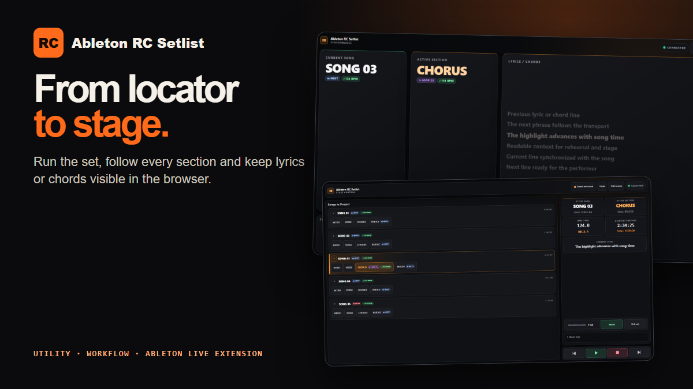
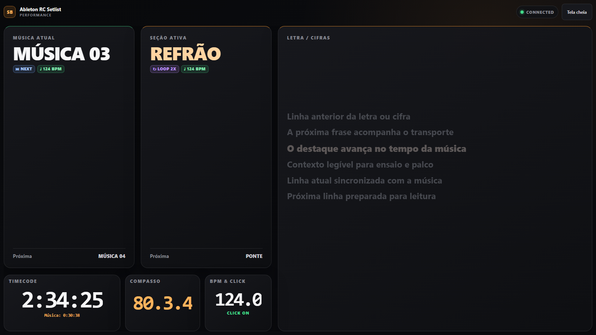
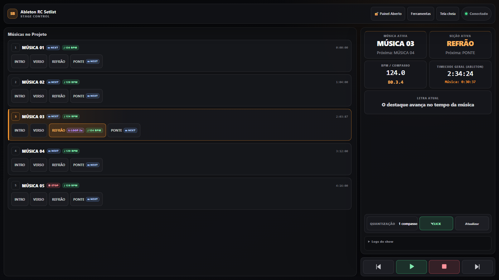
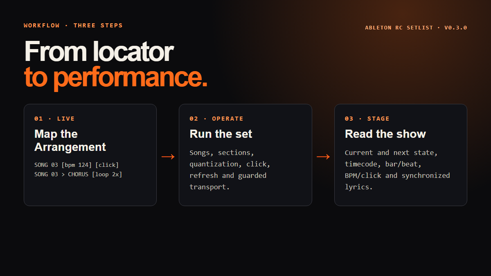
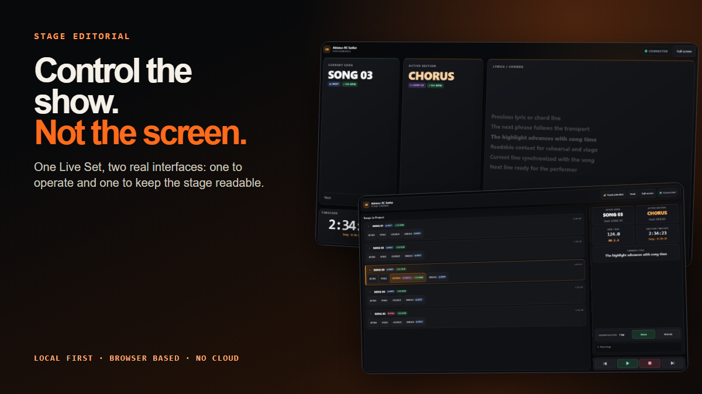

Locator-driven setlist
Turn Arrangement markers into ordered songs and sections with optional automation tags.
Ableton Live extension · v0.3.0
Turn Arrangement locators into a real operator setlist, synchronized lyric display and guarded stage controls — running locally between Ableton Live and your browser.
No account · no subscription · no analytics · source-available

The shipped interface
The product stays anchored to Ableton Live. The browser gives the operator and performer the information each one needs without inventing a second timeline.


Three-step workflow
Write the show structure once in Arrangement: [bpm], [click], [loop], [stop], [next] and [skip]. Ableton RC Setlist turns that structure into operator and performer views.

Built for rehearsal and stage
The interface mirrors the functions that already ship in v0.3.0. No fictional dashboard metrics and no show content bundled with the extension.
Turn Arrangement markers into ordered songs and sections with optional automation tags.
Previous and Next require a deliberate hold. Jump and quantization feedback wait for confirmation from Live.
Create, time, edit and display authorized LRC or plain text inside local show profiles.
See song, section, loop progress, timecode, bar/beat, BPM and click state at a glance.
Separate shows by profile, preserve local ordering and lyrics, and export the visible tracklist as CSV.
Open the controller or read-only Performance view from a trusted laptop, tablet or phone on the LAN.

One session · two views
Operate from Stage Control and keep Performance visible for the information that matters in the next second.
Release 0.3.0
Ableton RC Setlist requires Ableton Live 12.4.5+ Suite (Beta) with Extensions support and the external AbletonOSC Control Surface. Windows is validated; macOS remains experimental for this release.
Download the organized Product Truth, Workflow, interface and Stage Editorial assets.